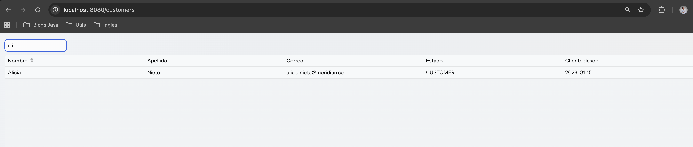

Sesión 3: Filtrar con Signals¶
Resumen de la sesión
- Al terminar vas a tener: un buscador encima del Grid que filtra por nombre, apellido, correo y estado mientras escribes.
- Conceptos nuevos: estado reactivo,
ValueSignal,bindValue,Signal.effect,get()ypeek(),ValueChangeMode.LAZY.
De dónde partimos¶
CustomerListView muestra tres clientes en un Grid ordenable que ocupa
toda la pantalla.
El problema¶
Con tres clientes se ve todo; con trescientos, no. Necesitamos un buscador que filtre el Grid.
La forma "clásica" sería:
Funciona. Pero ahora imagina que, además del Grid, un contador de resultados y un mensaje de "sin resultados" dependen de la búsqueda. Cada uno suma su propia línea de actualización dentro del listener, y el listener termina sabiendo de todos los componentes de la pantalla. Cada componente nuevo obliga a tocar ese mismo código.
Conceptos antes de escribir código¶
Estado reactivo¶
En vez de escuchar un evento y actualizar la pantalla a mano, en un modelo reactivo declaras una relación: "el Grid muestra los clientes que coinciden con la búsqueda". Cuando la búsqueda cambia, el framework se encarga de que el Grid se actualice.
ValueSignal: un valor que avisa cuando cambia¶
Un signal es un contenedor de un valor. Lo especial es que sabe quién depende de él, y cuando su valor cambia, les avisa.
var searchValue = new ValueSignal<>(""); // valor inicial: texto vacío
searchValue.set("ali"); // cambia el valor y avisa
Signal.effect: código que se re-ejecuta solo¶
Un efecto es un bloque de código que Vaadin ejecuta una vez y vuelve
a ejecutar automáticamente cada vez que cambia algún signal que ese
bloque leyó con get().
Vaadin ve que el efecto leyó searchValue con get() y lo "suscribe":
cada searchValue.set(...) futuro vuelve a ejecutar el bloque.
Si vienes de React o Angular¶
La idea es la misma que ya conoces: un estado, un campo enlazado a ese
estado y una tabla que se actualiza sola. Este es el mismo buscador en
los tres (filter es la función que filtra la lista; la nuestra la
escribimos en el Paso 4):
@Component({
selector: "app-customer-list",
imports: [FormsModule, TableComponent],
template: `
<input [ngModel]="query()" (ngModelChange)="query.set($event)" />
<app-table [rows]="rows()" />
`,
})
export class CustomerListComponent {
query = signal("");
rows = computed(() => filter(customers, this.query()));
}
Se parecen, pero hay tres diferencias que cambian la forma de pensar.
1. El estado vive en el servidor¶
En React y en Angular, query vive en el navegador, en JavaScript. En
Vaadin, searchValue es un campo de tu clase Java y vive en el
servidor: hay una instancia de CustomerListView por cada usuario y
pestaña abierta. El navegador solo dibuja los componentes y le avisa al
servidor cuando algo cambia.
Dos consecuencias:
- No hay API REST, JSON ni
fetchde por medio. El efecto filtra la lista con Java normal y, a partir de la Sesión 6, llama directo al servicio. - Cada cambio en el campo viaja al servidor. Por eso en el Paso 7 vamos a decidir cuándo se envía el valor.
2. No hay re-render¶
En React, cada setQuery vuelve a ejecutar toda la función del
componente. En Vaadin, el constructor de la vista corre una sola
vez. Los componentes son objetos que guardas en campos (como grid) y
modificas cuando hace falta. Lo único que se vuelve a ejecutar es el
bloque del efecto.
Si vienes de Angular con signals, esto te va a resultar familiar: las
dependencias se detectan solas al leer el signal, igual que en
computed o effect.
3. El Grid se actualiza con una llamada, no con una plantilla¶
No hay JSX ni template. En vez de escribir rows={rows} o
[rows]="rows()", le dices al Grid grid.setItems(...). Por eso aquí
usamos un efecto y no un valor calculado: el efecto es el que hace esa
llamada cada vez que cambia la búsqueda.
Tabla de equivalencias¶
| Idea | React | Angular | Vaadin Flow |
|---|---|---|---|
| Crear el estado | useState("") |
signal("") |
new ValueSignal<>("") |
| Cambiar el valor | setQuery("ali") |
query.set("ali") |
searchValue.set("ali") |
| Leer y suscribirse | query (en el render) |
query() |
searchValue.get() |
| Leer sin suscribirse | No hay equivalente directo | untracked(() => query()) |
searchValue.peek() |
| Campo enlazado al estado | value + onChange |
[ngModel] + (ngModelChange) |
bindValue(searchValue, searchValue::set) |
| Reaccionar a un cambio | Re-render o useEffect con [deps] |
computed o effect |
Signal.effect |
| Limpiar al salir de la pantalla | return dentro de useEffect |
Automático al destruir el componente | Automático: el efecto tiene un componente dueño |
| Esperar a que el usuario deje de escribir | Debounce a mano | debounceTime (RxJS) |
ValueChangeMode.LAZY |
Dos trampas según de dónde vengas
- Desde Angular: en Angular puedes leer
query()en cualquier parte. En Vaadin,get()fuera de un efecto lanzaIllegalStateException. Fuera de un efecto se usapeek(), que es lo que en Angular harías conuntracked. - Desde React: no hay arreglo de dependencias. La dependencia es
cualquier signal que leas con
get()dentro del efecto, así que no se te puede olvidar una ni te quedas con un valor viejo.
Si no te hace clic a la primera, es normal
La programación reactiva cuesta un par de repeticiones. En este taller usamos el mismo patrón (signal + enlace + efecto) cuatro veces; para la tercera ya se siente natural.
Paso 1: La lista de clientes como campo¶
Hasta ahora la lista se creaba y se entregaba al Grid en una sola línea. Para filtrarla necesitamos guardarla. Agrega el campo:
La lista se crea una sola vez, cuando se construye la vista. En la Sesión 5 vamos a agregar y quitar clientes de esta misma lista.
Paso 2: El signal de búsqueda¶
Imports:
Es de tipo String porque guarda lo que el usuario escribe, y empieza
vacío: sin filtro.
Paso 3: El campo de búsqueda, enlazado al signal¶
private TextField createSearch() {
var search = new TextField();
search.bindValue(searchValue, searchValue::set);
return search;
}
bindValue crea un enlace de dos vías entre el campo y el signal:
| Dirección | Qué pasa |
|---|---|
| Usuario → signal | El usuario escribe y el valor se guarda con searchValue::set |
| Signal → campo | Si el código hace searchValue.set("bob"), el campo muestra "bob" |
Paso 4: El efecto que filtra¶
Agrega en createSearch(), antes del return:
Y el método que filtra. Empezamos solo por el nombre:
private void updateCustomerList(String query) {
var filtered = customers;
if (!query.isEmpty()) {
var lower = query.toLowerCase();
filtered = customers.stream()
.filter(c -> c.getFirstName().toLowerCase().contains(lower))
.collect(Collectors.toCollection(ArrayList::new));
}
grid.setItems(filtered);
}
Import: java.util.stream.Collectors.
Leámoslo por partes:
- Si la búsqueda está vacía, mostramos todos los clientes.
- Si no, pasamos todo a minúsculas (
toLowerCase()) para que "ALI", "Ali" y "ali" encuentren lo mismo. stream().filter(...)deja solo los clientes cuyo nombre contiene el texto.Collectors.toCollection(ArrayList::new)junta el resultado en una lista modificable.- Al final,
grid.setItems(...)reemplaza las filas del Grid.
Nada de esto es específico de Vaadin: es Java normal con streams.
¿Por qué Signal.effect(search, ...) recibe un componente?
El primer argumento es el dueño del efecto. El efecto vive mientras ese componente esté en pantalla: cuando el usuario navega a otra vista y el componente se retira, el efecto se limpia solo. No hay suscripciones que olvidar cerrar.
Paso 5: Ponerlo en pantalla¶
public CustomerListView() {
setSizeFull();
var search = createSearch();
configureGrid();
add(search, grid);
}
Borra la línea grid.setItems(getSampleCustomers()); del
constructor.
¿Por qué ya no hace falta setItems en el constructor?
Un efecto se ejecuta una vez apenas su componente aparece en
pantalla, y después cada vez que cambian sus signals. En esa primera
ejecución searchValue está vacío, así que updateCustomerList("")
llena el Grid con todos los clientes. El efecto ya hace el trabajo.
Guarda y mira: escribe "ali" en el campo y presiona Enter. El Grid muestra solo a Alicia.
Lo que pasó por dentro:
Escribes "ali" + Enter
→ bindValue guarda "ali" en searchValue
→ searchValue avisa a quien lo leyó con get()
→ el efecto se re-ejecuta: updateCustomerList("ali")
→ grid.setItems([Alicia])
El campo y el Grid no se conocen: el campo solo escribe en el signal, y el efecto solo lee el signal.
Paso 6: Buscar en más columnas¶
Amplía el filtro:
filtered = customers.stream()
.filter(c -> c.getFirstName().toLowerCase().contains(lower)
|| c.getLastName().toLowerCase().contains(lower)
|| c.getEmail().toLowerCase().contains(lower)
|| c.getStatus().name().toLowerCase().contains(lower))
.collect(Collectors.toCollection(ArrayList::new));
getStatus().name() convierte el enum a texto ("PROSPECT"), así se
puede buscar por estado.
Guarda y mira: prueba con "bluefern" (dominio de correo), "nieto" (apellido) y "prospect" (estado). La columna "Cliente desde" no se filtra porque es una fecha; se podría convertir a texto, pero no lo necesitamos.
Paso 7: Placeholder y filtro sin Enter¶
Import: com.vaadin.flow.data.value.ValueChangeMode.
setPlaceholdermuestra un texto de ayuda dentro del campo vacío, en vez de una etiqueta encima.ValueChangeModedecide cuándo el valor del campo llega al servidor:
| Modo | Cuándo envía el valor | Uso típico |
|---|---|---|
ON_CHANGE (por defecto) |
Al presionar Enter o salir del campo | Formularios |
EAGER |
En cada tecla | Casi nunca: un viaje al servidor por letra |
LAZY |
Cuando el usuario deja de escribir un instante | Buscadores |
Guarda y mira: ya no hace falta Enter. El filtro se aplica cuando dejas de escribir.
La única regla que hay que memorizar: get() vs peek()¶
Hay dos formas de leer un signal:
| Método | Qué hace | Dónde se usa |
|---|---|---|
get() |
Lee el valor y suscribe el efecto actual a ese signal | Dentro de Signal.effect |
peek() |
Lee el valor sin suscribirse | En cualquier otro lugar: listeners de botón, métodos auxiliares |
Llamar a get() fuera de un efecto lanza IllegalStateException.
Vamos a usar peek() por primera vez en la Sesión 5.
Código completo al cierre de la sesión¶
CustomerListView.java
package com.baqjug.crm.ui;
import com.baqjug.crm.backend.Customer;
import com.baqjug.crm.backend.Status;
import com.vaadin.flow.component.grid.Grid;
import com.vaadin.flow.component.orderedlayout.VerticalLayout;
import com.vaadin.flow.component.textfield.TextField;
import com.vaadin.flow.data.value.ValueChangeMode;
import com.vaadin.flow.router.Route;
import com.vaadin.flow.signals.Signal;
import com.vaadin.flow.signals.local.ValueSignal;
import java.time.LocalDate;
import java.util.ArrayList;
import java.util.List;
import java.util.stream.Collectors;
@Route("customers")
public class CustomerListView extends VerticalLayout {
private final Grid<Customer> grid = new Grid<>();
private final List<Customer> customers = getSampleCustomers();
private final ValueSignal<String> searchValue = new ValueSignal<>("");
public CustomerListView() {
setSizeFull();
var search = createSearch();
configureGrid();
add(search, grid);
}
private TextField createSearch() {
var search = new TextField();
search.setPlaceholder("Buscar");
search.setValueChangeMode(ValueChangeMode.LAZY);
search.bindValue(searchValue, searchValue::set);
Signal.effect(search, () -> updateCustomerList(searchValue.get()));
return search;
}
private void configureGrid() {
grid.addColumn(Customer::getFirstName).setHeader("Nombre").setSortable(true);
grid.addColumn(Customer::getLastName).setHeader("Apellido").setSortable(true);
grid.addColumn(Customer::getEmail).setHeader("Correo").setSortable(true);
grid.addColumn(Customer::getStatus).setHeader("Estado").setSortable(true);
grid.addColumn(Customer::getCustomerSince).setHeader("Cliente desde").setSortable(true);
grid.setSizeFull();
}
private void updateCustomerList(String query) {
var filtered = customers;
if (!query.isEmpty()) {
var lower = query.toLowerCase();
filtered = customers.stream()
.filter(c -> c.getFirstName().toLowerCase().contains(lower)
|| c.getLastName().toLowerCase().contains(lower)
|| c.getEmail().toLowerCase().contains(lower)
|| c.getStatus().name().toLowerCase().contains(lower))
.collect(Collectors.toCollection(ArrayList::new));
}
grid.setItems(filtered);
}
private List<Customer> getSampleCustomers() {
return new ArrayList<>(List.of(
new Customer("Alicia", "Nieto", "alicia.nieto@meridian.co",
Status.CUSTOMER, LocalDate.of(2023, 1, 15)),
new Customer("Boris", "Martínez", "boris.martinez@bluefern.io",
Status.CUSTOMER, LocalDate.of(2022, 11, 3)),
new Customer("Carolina", "Schmidt", "carolina.schmidt@meridian.co",
Status.PROSPECT, null)
));
}
}

Verifica¶
- [ ] Al cargar
/customersaparecen los tres clientes (el efecto llenó el Grid). - [ ] "ali" deja solo a Alicia; "bluefern" deja solo a Boris.
- [ ] "PROSPECT", "prospect" y "Prospect" dan el mismo resultado.
- [ ] Al borrar el texto vuelven todos.
- [ ] El filtro se aplica sin presionar Enter.
Errores comunes¶
| Síntoma | Causa | Solución |
|---|---|---|
IllegalStateException al usar get() |
Llamaste a get() fuera de un efecto |
Dentro de efectos get(); fuera, peek() |
| El Grid aparece vacío al cargar | El efecto no se registró, o el Grid no está en pantalla | Revisa que createSearch() se llame y que search se agregue con add(...) |
| Filtra solo al presionar Enter | Falta ValueChangeMode.LAZY |
Agrégalo al campo |
No compila ValueSignal |
Import equivocado o Vaadin anterior a 25.1 | com.vaadin.flow.signals.local.ValueSignal y Vaadin 25.1+ |
Qué resolvimos¶
- Componentes desacoplados. El campo escribe en un signal; el efecto lee el signal y actualiza el Grid. Un componente nuevo que dependa de la búsqueda solo necesita leer el mismo signal.
- El enlace de dos vías (
bindValue) mantiene campo y signal sincronizados en ambas direcciones. - Los efectos se limpian solos porque pertenecen a un componente.
LAZYevita un viaje al servidor por cada tecla.
Checkpoint¶
Sigue con la Sesión 4.